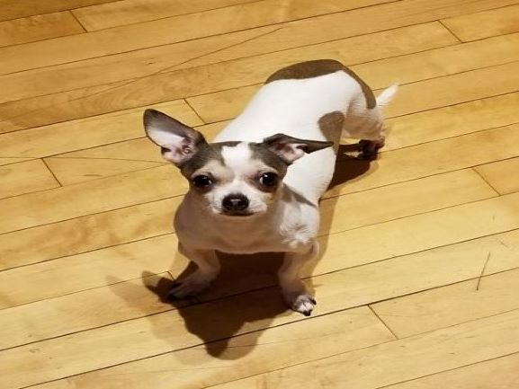
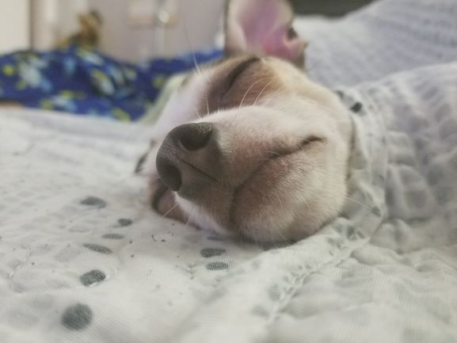

Welcome to my page. I do not have much experience with html but so far I am loving it. It does not feel as overwhelming as java and I really enjoy working on html. I am looking forward to learning more this semester and hoping it just gets better from here.
The resume page is...well my resume. Now that I look at my resume I think I need more experience and I should really do some more volunteer work. It was a great experience and should do it again sometime.
The About Me page is basically about the shows, music and video games I like.
Anyways here are some pictures of my dog, Pinky.
 Pinky turned 8 years old this month and in case you were wondering, Pinky is a boy. He seems to be mistaken for a girl because his name. The thing with his name is that we just kept the name his previous owner gave him. Anyways, he can be a troublemaker and a handful but I still love him.